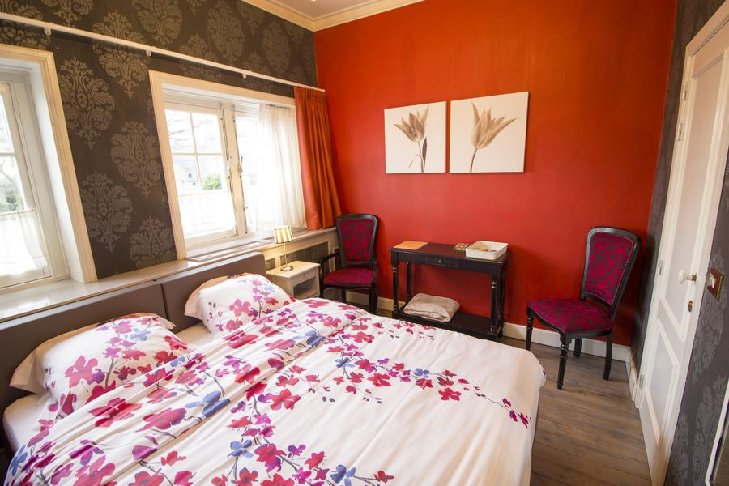
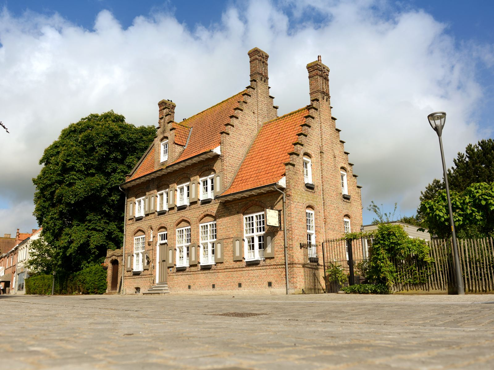
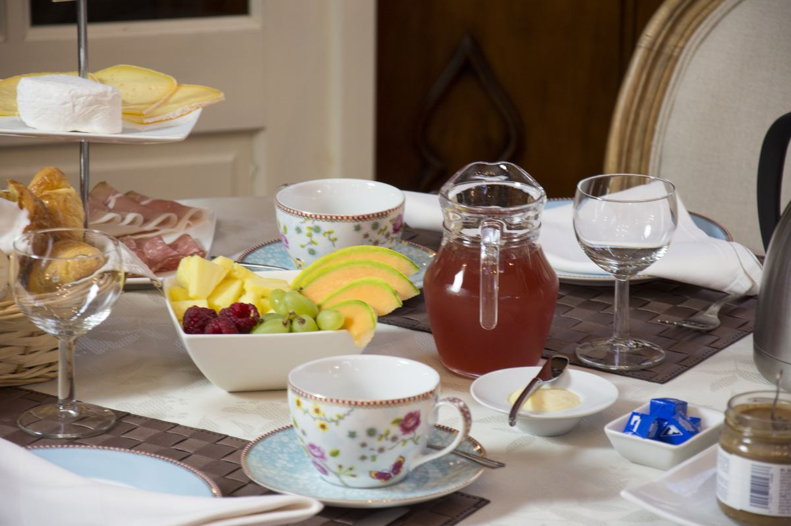
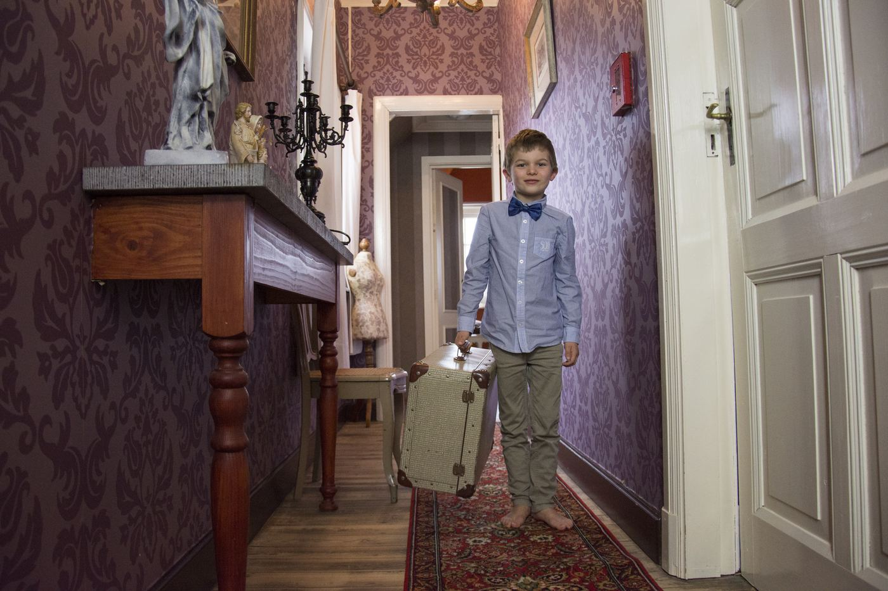
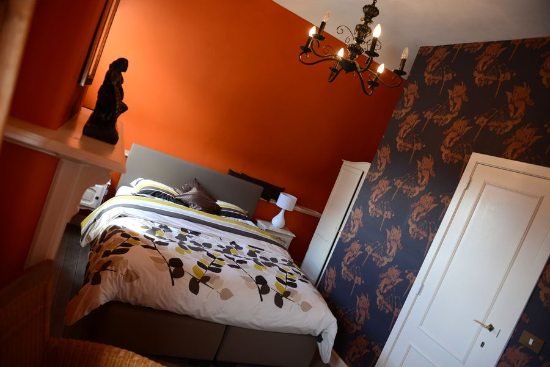
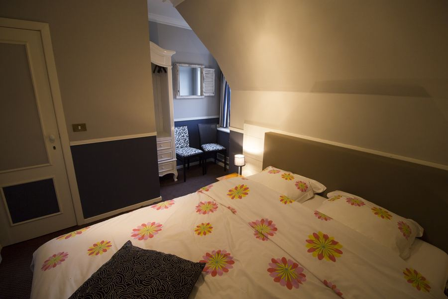
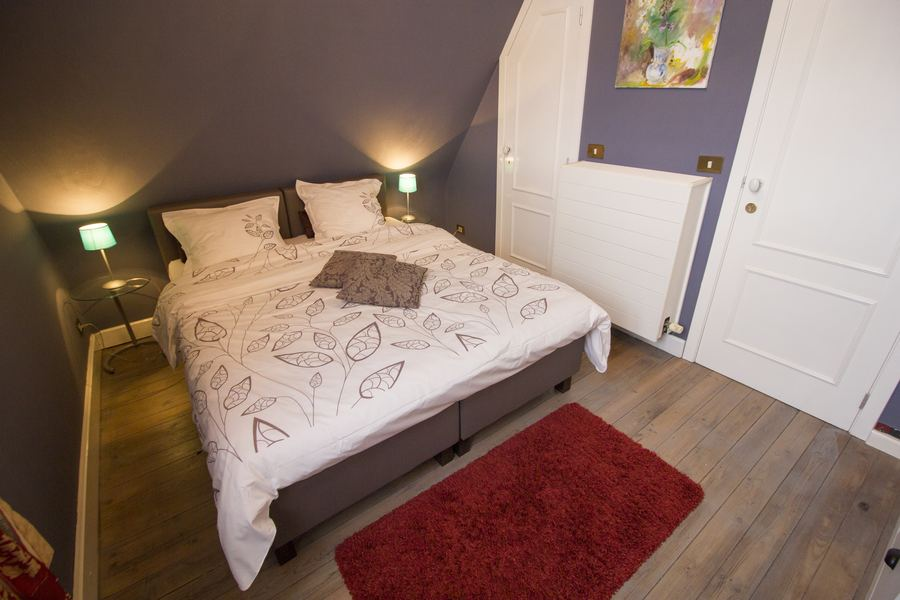
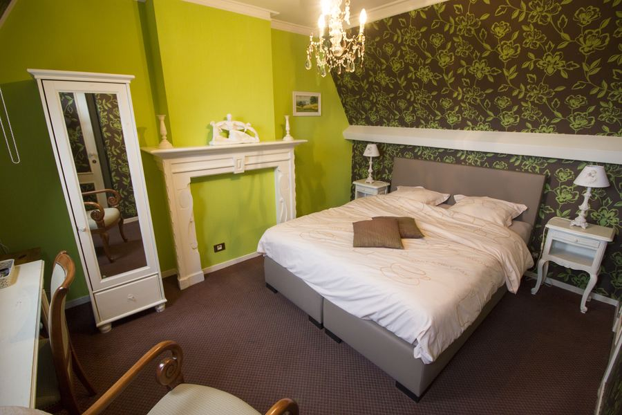
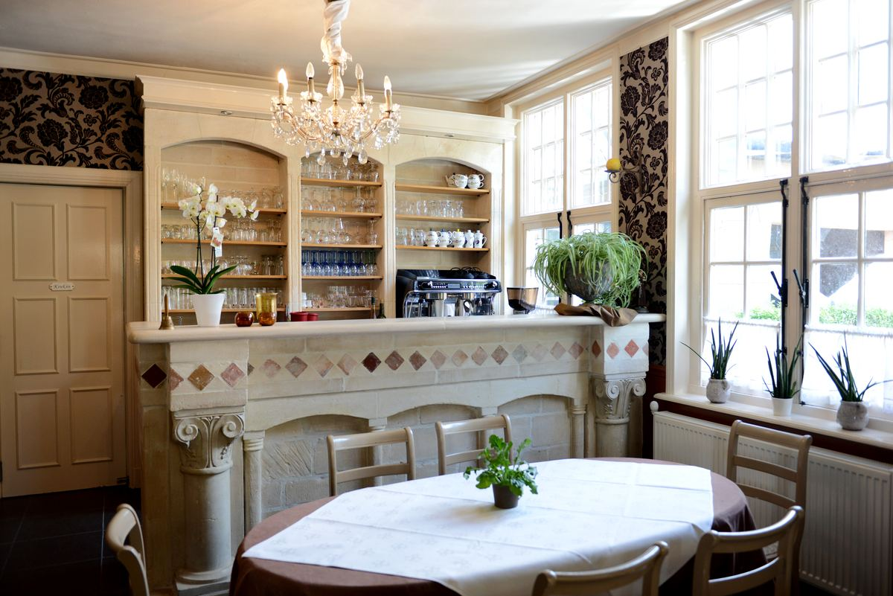

1e verdiepingVermillion
Uitzicht op de kerktoren, twee eenpersoonsbedden.
Vijf kamers met elk hun eigen kleur, een uitgebreid ontbijt met streekproducten en de weidse IJzerbroeken vlak achter het dorp.
€80 per nacht voor 1 persoon · €115 voor 2 personen · ontbijt inbegrepen


l'Heritage is een familiehuis aan de Dorpplaats van Reninge, in de vroegere kapelanij naast de kerk. Je slaapt in een klein, persoonlijk huis waar je 's avonds de stilte van de polder hoort en 's ochtends aanschuift aan een gedekte ontbijttafel.
Van hieruit wandel of fiets je zo de IJzerbroeken in, en ben je in een kwartier in Ieper, Poperinge of Diksmuide.
Elke kamer draagt de naam van haar kleur. Allemaal met ontbijt inbegrepen, de prijs hangt alleen af van het aantal personen.
Binnen vind je hoge plafonds, oude deuren, een kroonluchter hier en daar en behang met karakter. Een huis met een verleden, waar je meteen thuiskomt.


1e verdiepingUitzicht op de kerktoren, twee eenpersoonsbedden.

1e verdiepingOp het oosten, met de zonsopgang boven de IJzervlakte.

1e verdiepingAan de achterkant van het huis, de rustigste plek.

2e verdiepingKnus, met dakkapel en zicht over de IJzerbroeken.

2e verdiepingEen stille kamer onder het dak.

Ook wie niet blijft slapen is welkom. Op het zonnige terras of bij de open haard bakken we verse pannenkoeken volgens het familierecept, en schenken we koffie voor fietsers en wandelaars die even willen uitblazen.
De Westhoek is vlak, groen en vol verhalen. Een paar tips van ons, op fiets- of korte autoafstand.
Natte weilanden langs de IJzer, met in de winter duizenden ganzen. Ideaal om te wandelen en vogels te kijken.
De Lakenhalle, het In Flanders Fields Museum en elke avond om 20 uur de Last Post onder de Menenpoort.
Hopstad met het Hopmuseum en Talbot House. Proef er de streek bij Goeste.
De IJzertoren en de Dodengang, een van de best bewaarde loopgraven van de Eerste Wereldoorlog.
De abdij Sint-Sixtus en het bezoekerscentrum In de Vrede, bekend om het trappistenbier.
Nieuwpoort en De Panne voor een dag zee en strand.
Bekijk de vrije data en boek meteen online, rechtstreeks bij ons. Liever eerst iets vragen? Bel of mail ons gerust.